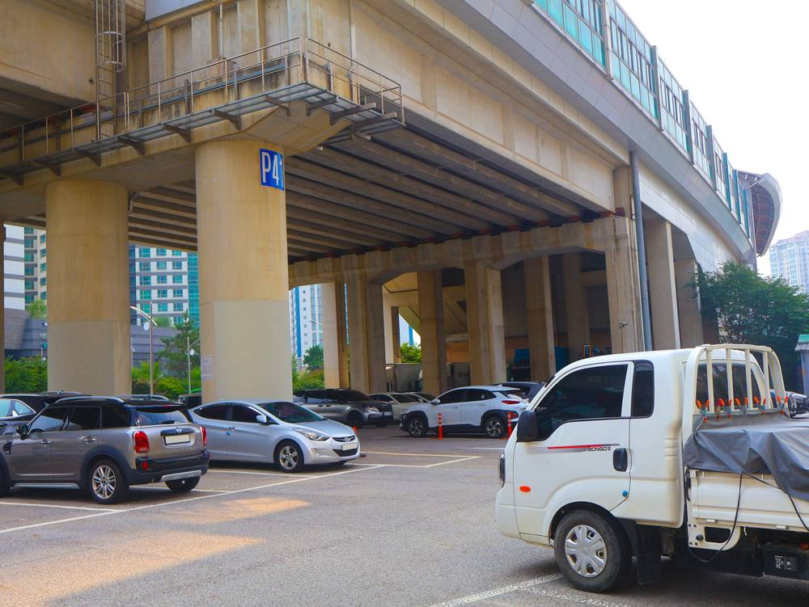

"공영주차장 태양광, 시민이 소유·운영하는 사업 돼야"…인천 환경단체, 공모지침에 시민 지분율 넣자 제안

인천시 후보지 91곳·iH 40MW 구상…"수익 나눠 받는 데 그치지 말고 시민이 발전소 주인으로"
인천의 환경단체 활동가가 공영주차장 태양광 의무화를 시민이 직접 발전소를 소유하고 운영하는 기회로 삼아야 한다고 주장했다. 이충현 인천환경운동연합 기후에너지팀장은 14일 칼럼에서 인천시와 인천도시공사(iH)가 사업 방식을 정하는 지금 시민 참여를 사업 조건에 못 박아야 한다고 밝혔다.
공영주차장 재생에너지 설치는 법적 의무가 됐고, 기존 의무 대상 주차장은 이달 28일까지 설치계획서를 내야 한다. 인천시는 지난 10월 공영주차장 91곳을 태양광 후보지로 잠정 선정했고, iH는 약 40MW 규모 발전사업을 구상하며 내년 4월까지 사업 방식을 구체화하는 연구용역을 진행하고 있다. 이 팀장은 2025년 인천 발전량의 95.1%가 석탄·LNG 등 화석연료에서 나왔고 태양광은 0.5%에도 못 미쳤다며, 40MW만으로는 구조를 바꾸기 어렵다고 짚었다.
그는 공모지침서와 사업자 평가에 시민 지분율, 의사결정 참여, 수익의 지역사회 환원을 기준으로 넣고, 공공부지 활용 원칙을 조례로 뒷받침하자고 제안했다. 인천시 제6차 지역에너지계획에는 2026~2030년 주차장 태양광 32MW, 주민참여형 태양광 23MW 보급 목표가 담겨 있으며, 주민참여형은 2027년부터 해마다 5MW씩 늘리는 것이 목표다.
시민에너지 관점
환경운동연합은 2022년 수도권 대형 주차장 282곳의 태양광 잠재량을 약 318MW로 추산했고, 경기도 도로 유휴부지·수원 공공주차장·전주 시유지에서는 이미 시민협동조합이 발전소를 짓고 운영하고 있다. 시민 참여를 조건으로 걸면 사업이 늦어진다는 걱정이 있지만, 공공이 부지를 내주는 사업에서 부지 확보라는 가장 큰 장벽은 이미 사라진 셈이다. 수익 일부를 나눠 받는 시민은 수혜자에 머물지만, 지분과 결정권을 가진 시민은 다음 발전소를 직접 만드는 주체가 된다. 인천시와 iH는 내년 4월 용역 결과에 시민 지분율과 협동조합 참여 몫을 숫자로 적어 넣어야 한다.
출처: 인천투데이 2026-11-14 이충현(인천환경운동연합 기후에너지팀장, 칼럼) 원문 보기
「公営駐車場の太陽光、市民が所有・運営する事業に」…仁川の環境団体、公募指針に市民持ち分率を
仁川市候補地91カ所・iH 40MW構想…「収益の分配にとどまらず市民を発電所の主に」
仁川の環境団体の活動家が、公営駐車場への太陽光義務化を市民が自ら発電所を所有・運営する機会にすべきだと訴えた。仁川環境運動連合の李忠賢（イ・チュンヒョン）気候エネルギーチーム長は14日のコラムで、仁川市と仁川都市公社（iH）が事業方式を決める今こそ、市民参加を事業条件に明記すべきだと述べた。
公営駐車場への再エネ設置は法的義務となり、既存の義務対象駐車場は今月28日までに設置計画書を提出しなければならない。仁川市は10月に公営駐車場91カ所を太陽光候補地として暫定選定し、iHは約40MW規模の発電事業を構想、来年4月までに事業方式を具体化する研究委託を進めている。李氏は2025年の仁川の発電量の95.1%が石炭・LNGなど化石燃料由来で、太陽光は0.5%にも満たなかったとし、40MWだけでは構造は変わりにくいと指摘した。
李氏は公募指針と事業者評価に市民持ち分率、意思決定への参加、収益の地域還元を基準として盛り込み、公有地活用の原則を条例で裏付けるよう提案した。仁川市の第6次地域エネルギー計画には2026〜2030年に駐車場太陽光32MW、住民参加型太陽光23MWを普及する目標があり、住民参加型は2027年から毎年5MWずつ増やす計画だ。
市民エネルギーの視点
環境運動連合は2022年、首都圏の大型駐車場282カ所の太陽光潜在量を約318MWと推計した。京畿道の道路遊休地、水原の公共駐車場、全州の市有地では既に市民協同組合が発電所を建てて運営している。市民参加を条件にすると事業が遅れるとの懸念もあるが、公共が用地を提供する事業では最大の壁である用地確保がすでに解決している。収益の一部を受け取るだけの市民は受益者にとどまるが、持ち分と決定権を持つ市民は次の発電所を自ら作る主体になる。仁川市とiHは来年4月の委託結果に、市民持ち分率と協同組合の参加枠を数字で書き込むべきだ。
出典: 인천투데이 2026-11-14 이충현(인천환경운동연합 기후에너지팀장, 칼럼) 原文を読む
"公营停车场太阳能应成为市民拥有和运营的项目"…仁川环保团体建议在招标指南中写入市民持股比例
仁川市91处候选地、iH构想40MW…"不止分享收益，要让市民成为电站主人"
仁川一名环保团体活动人士主张，应把公营停车场太阳能义务化变成市民直接拥有和运营电站的机会。仁川环境运动联合气候能源组长李忠贤在14日的专栏中表示，在仁川市和仁川都市公社（iH）确定项目方式的当下，必须把市民参与写进项目条件。
在公营停车场安装可再生能源设施已成为法定义务，现有义务对象停车场须在本月28日前提交安装计划书。仁川市于10月暂定91处公营停车场为太阳能候选地，iH正在构想约40MW规模的发电项目，并开展研究，计划在明年4月前确定项目方式。李忠贤指出，2025年仁川发电量的95.1%来自煤炭、液化天然气等化石燃料，太阳能占比不到0.5%，仅靠40MW难以改变结构。
他建议在招标指南和企业评审中加入市民持股比例、参与决策、收益回馈地区社会等标准，并以条例保障公共用地的使用原则。仁川市第六次地区能源计划提出，2026至2030年推广停车场太阳能32MW、居民参与型太阳能23MW，其中居民参与型从2027年起每年增加5MW。
市民能源视角
环境运动联合在2022年估算首都圈282处大型停车场的太阳能潜力约为318MW；在京畿道道路闲置地、水原公共停车场和全州市有地，市民合作社已经在建设和运营电站。有人担心把市民参与设为条件会拖慢项目，但在公共提供用地的项目中，最大的障碍——用地——已经解决。只分得部分收益的市民仍是受益者，拥有股份和决策权的市民才会成为建设下一座电站的主体。仁川市和iH应在明年4月的研究结果中，用数字写明市民持股比例和合作社参与份额。
来源: 인천투데이 2026-11-14 이충현(인천환경운동연합 기후에너지팀장, 칼럼) 查看原文
"Public car-park solar should be owned and run by citizens": Incheon environmental group urges citizen-equity criteria in tenders
Incheon has 91 candidate sites and iH plans 40MW; "citizens should own the plants, not just share the profits"
An Incheon environmental activist has argued that the mandate to install solar on public car parks should become a chance for citizens to own and operate power plants themselves. In a column published on the 14th, Lee Chung-hyun, head of the climate and energy team at the Incheon Federation for Environmental Movements, said citizen participation must be written into project conditions now, while Incheon City and Incheon Housing and City Development Corporation (iH) are deciding how to run the scheme.
Renewable energy on public car parks is now a legal obligation, and car parks already subject to it must submit installation plans by November 28. In October the city provisionally picked 91 public car parks as solar candidates, and iH is planning a roughly 40MW project, with a feasibility study due to settle the business model by April next year. Lee noted that 95.1% of Incheon's electricity in 2025 came from coal, LNG and other fossil fuels and solar supplied less than 0.5%, so 40MW alone cannot change the picture.
He proposed adding citizen equity share, participation in decision-making and local reinvestment of profits to tender guidelines and developer evaluations, backed by an ordinance on the use of public land. Incheon's sixth regional energy plan targets 32MW of car-park solar and 23MW of resident-participation solar for 2026–2030, with the resident-participation share growing by 5MW a year from 2027.
Citizen Energy View
The Korean Federation for Environmental Movements estimated in 2022 that 282 large car parks in the capital region could host about 318MW of solar, and citizen cooperatives already build and run plants on idle road land in Gyeonggi, public car parks in Suwon and city land in Jeonju. Some worry that requiring citizen participation will slow projects, but when the public sector provides the land, the biggest barrier, finding a site, is already gone. Citizens who merely receive a slice of the revenue stay beneficiaries; citizens with equity and a vote become the people who build the next plant. Incheon and iH should put concrete figures for citizen equity and cooperative participation into the study results due next April.
Source: 인천투데이 2026-11-14 이충현(인천환경운동연합 기후에너지팀장, 칼럼) Read the original